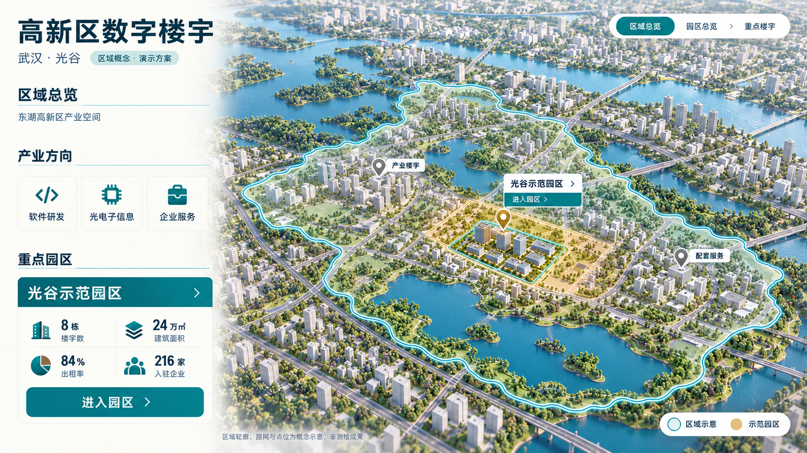
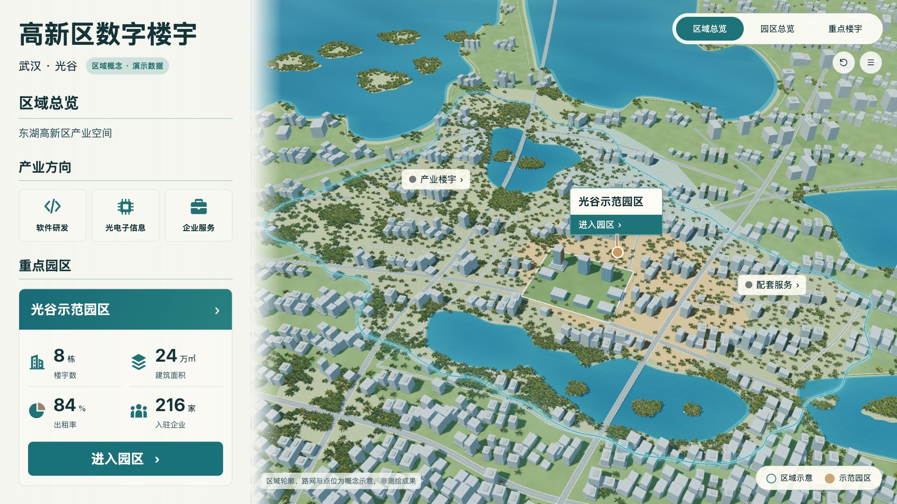
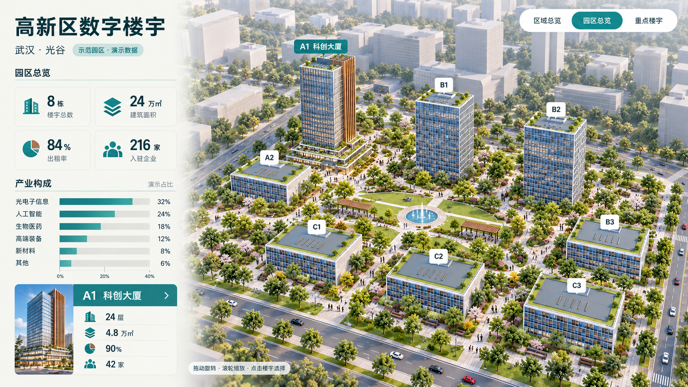
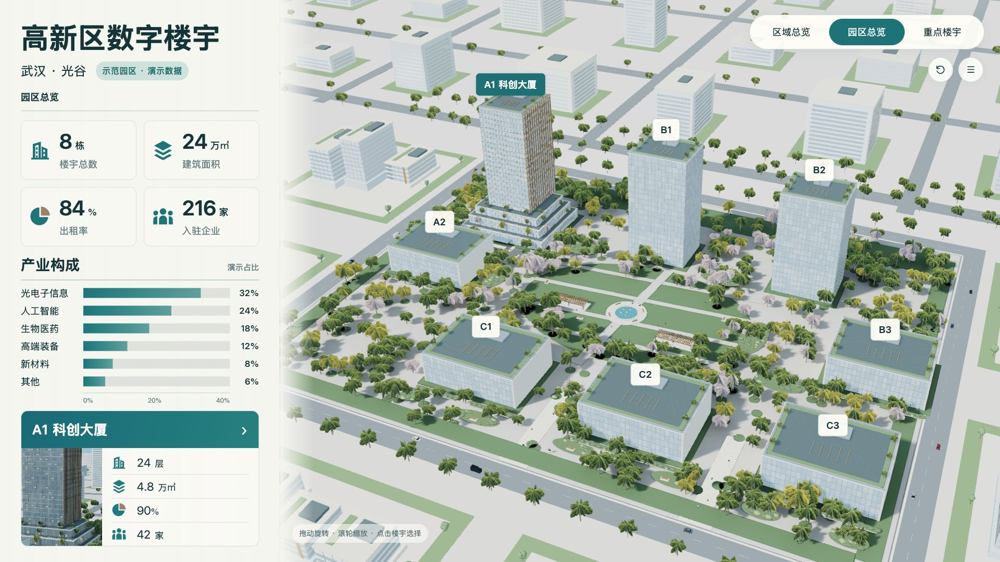
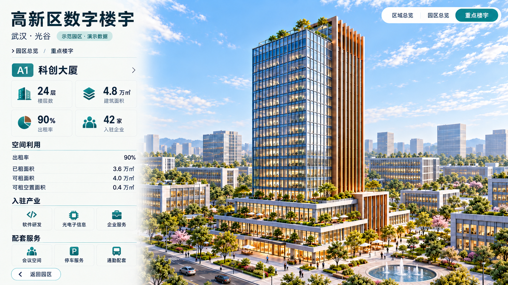
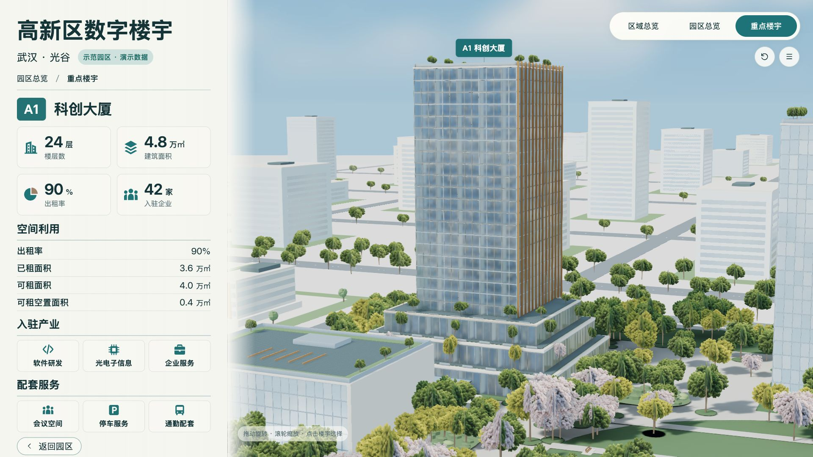

三场景终稿／实际网页并排对照
终稿保持原始比例；实际画布1920×1080。AI图不作为实时页面截图，不裁掉差异区域。
城市区域 · 1920×1080 · 演示数据 · 默认相机

已确认AI终稿
v27实际网页截图园区总览 · 1920×1080 · 演示数据 · 默认相机

已确认AI终稿
v27实际网页截图A1科创大厦 · 1920×1080 · 演示数据 · 默认相机

已确认AI终稿
v27实际网页截图